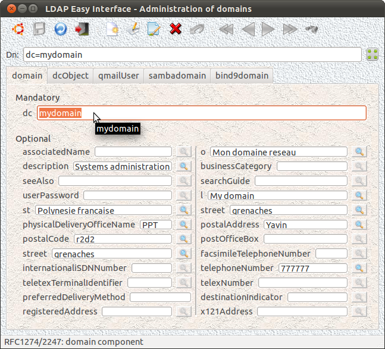
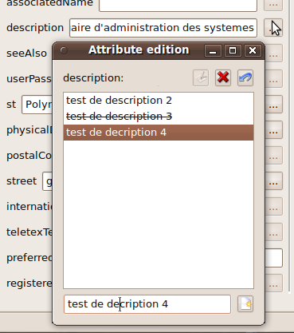
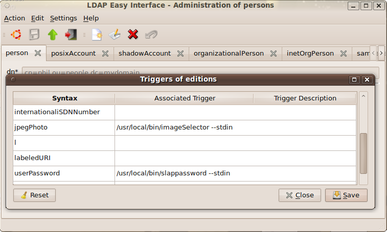
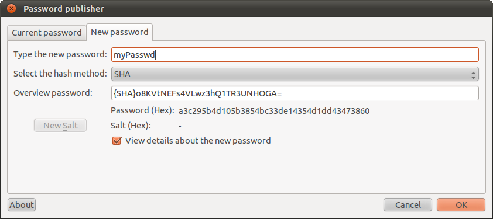
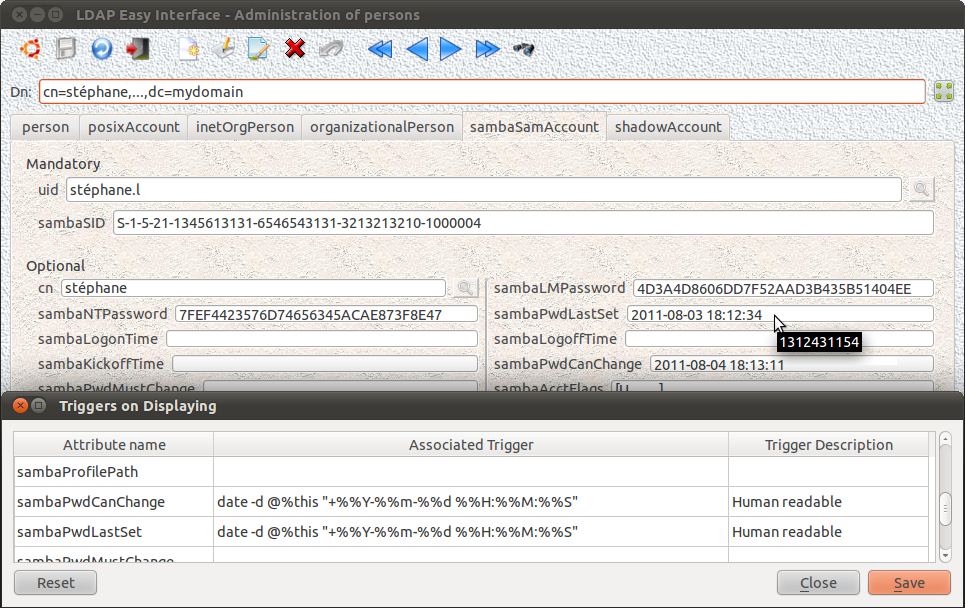
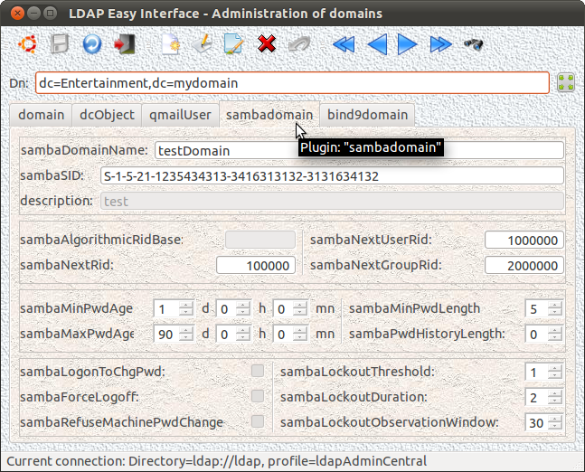

Page suivante
Page précédente Sommaire (Français - English)
Cette interface graphique permet de
gérer l'arborescence de chacun des domaines de l'annuaire LDAP d'administration
du réseau d'entreprise (ajout/suppression/modification des domaines ou de leurs paramètres).

Note: La double présence du champs "streetAddress" est due à une erreur de définition dans le schéma "cosine.schema" faite au niveau de sa RFC.
Cette interface graphique partage son code avec les autres interfaces : "
personFrontend", "
posixGroupFrontend" et "
organizationalRoleFrontend". Le nom de son exécutable de lancement doit par conséquent contenir la chaîne de caractères "
Frontend" précédée (sans espace ni autre caractère) du nom de "l'
objectClass" de l'entité qu'elle gère (ci-dessus, en exemple : "
domain").
Un tel exécutable peut être appelé au travers de liens physiques ou symboliques ("
ln [-s]") qui
respectent la-dite règle ou, à défaut, qui ne contiennent pas la chaîne
"
Frontend". Cette règle est récursive et fonctionne donc sur des liens de liens. (
cf. ci-dessous)
Le
principe de fonctionnement de cette interface de gestion des domaines
LDAP est la constitution dynamique de son masque de saisie à partir de :
- la liste des "objectClass" constituant le
domaine en cours de visualisation (ou de création ou modification),
- ainsi que de la liste des attributs qui composent chacun des "objectClasses" constitutifs.
Le responsable de l'architecture de l'annuaire LDAP peut, sur une sous-arborescence spécifique,
changer la composition des sous-domaines présents ou à créer (ajouter ou en supprimer à volonté un ou plusieurs "
objectClasses"). Ces changements seront ainsi hérités lors de
la création des nouveaux sous-domaines qui y seront menées.
Les mêmes "
objectClasses" que
ceux du domaine d'appartenance sont en effet proposés par défaut lors
de la création de tout nouveau sous-domaine ; cette liste
d'objectClasses peut cependant à tout moment faire l'objet de
modifications (ajouts/suppressions) par l'opérateur, pour peu que ce
dernier possède les droits de modification sur la structure des objets
gérés par l'interface (rôle "
adminStruct").
Ainsi, pour créer par exemple un domaine fils de la racine, la requête suivante donnera la liste des "
objectClass" à prendre en compte (le domaine "
top" étant bien entendu à exclure) :
m_connectForm->getLdapHandle()->doSearchScopeBase ( m_connectForm->getRootEntry(), "objectClass" ) ;
Le résultat pourrait par exemple être :
objectClass: top
objectClass: domain
objectClass: dcObject
objectClass: qmailUser
objectClass: sambaGroupMapping
Il suffira ensuite à l'interface graphique, pour chacune des
occurrences ainsi trouvées, de récupérer dans le schéma de l'annuaire
la définition de chacun des "
objectClass" pour en extraire la liste des attributs obligatoires "
must" et/ou possibles "
may" et constituer ainsi dynamiquement son masque d'affichage présenté sous forme de fenêtres et d'onglets classés par "
objectClass" ("
QTabWidget").
m_connectForm->getLdapHandle()->doSearchScopeBase ( "cn=subschema", "objectClasses" );
Extrait de résultat possible :
...
objectClasses: ( 1.3.6.1.4.1.1466.344 NAME 'dcObject' DESC 'RFC2247: domain component object' SUP top AUXILIARY MUST dc )
...
La fonction "LDAPObjectClass* ldap_str2objectclass ()" (de la bibliothèque LDAP-cliente) permet à l'interface de convertir chaque chaîne résultat en structure "LDAPObjectClass" et d'en extraire facilement les informations souhaitées ("oc->oc_at_oids_must" et "oc->oc_at_oids_may" au format "char ** - null terminated").
Nota : OpenLdap ne permet pas pour l'instant de modifier le "
DN" d'une entrée si celle-ci n'est pas une feuille de l'arborescence
LDAP ... L'interface graphique "
domainFrontend" émule cependant (sur profile "
adminStruct" de l'opérateur) ce type de modification de "
DN" (exception faite bien sûr de la racine d'annuaire : "
rootEntry") par déplacement - copy+delete - de toute l'arborescence concernée par une telle demande
. Attention cependant au volume des écritures en base que peuvent représenter certaines requêtes ...
Pour les
paramètres possiblement multivalués, la fenêtre suivante est utilisable
et permet l'édition de toutes les valeurs souhaitées pour le paramètre.

Nota:
Les différentes valeurs seront automatiquement classées par ordre
alphabétique, la première de la liste apparaissant implicitement dans
le masque d'écran principal de l'interface. Pour forcer ce classement,
la syntaxe "{1}paramètre1, {2}paramètre2, ..." est bien évidement
utilisable ...
La définition des déclencheurs se fait au travers du menu : "
Settings/Triggers for Editing fields".
Ces déclencheurs permettent de traiter le cas de certaines données
spécifiques lors de leur saisie par l'opérateur, ceci dans le but de
respecter par exemple leur mise en forme ou bien certaines règles de
cohérence qui peuvent les
régir (règles non obligatoirement connues de l'opérateur autorisé
à manipuler de telles données).
Il peut s'agir aussi, tout simplement, de faire appel à d'autres
interfaces spécifiques mieux adaptées à la manipulation de certains
type de données, tel que par exemple un sélecteur d'images pour la
saisie du paramètre "
jpegPhoto" ...

Un tel masque de définition de déclencheurs est accessible à l'opérateur en mode modification seulement si le rôle "
adminStruct" lui a préalablement été affecté.
La commande externe (format "
Shell Unix") définie au sein de chaque déclencheur est appelée automatiquement par
l'interface graphique dès
que l'opérateur tente d'éditer le champs pour lequel ce déclencheur est défini.
Lors de l'exécution de chacun des déclencheurs, la commande externe qui le défini est appelée avec, dans son entrée standard (
stdin),
la valeur courante
du champ déclencheur. Il va de soit que la commande externe peut bien
évidement ne pas tenir compte de cette valeur si elle n'en a pas besoin
lors de son exécution.
Chaque commande externe appelée par un déclencheur doit être écrite de sorte à
retourner :
- soit la nouvelle saisie validée par l'opérateur (y compris éventuellement "", valeur nulle) sur la sortie standard (stdout) du processus, validée par un code retour d'exécution égale à : 0 (zéro),
- soit,
sur abandon ou erreur d'exécution, un code retour d'exécution différent de 0 (zéro), éventuellement complété par un message d'erreur sur la sortie erreur du processus "stderr" permettant de renseigner l'opérateur sur la cause de l'échec.
La valeur chaîne de caractères (ou, plus généralement d'octects, selon la
nature de l'information saisie) ainsi correctement retournée constituera le nouveau
contenu du champ déclencheur.
Utilisation des valeurs d'attributs :
Les valeurs des autres champs d'attributs du masque de saisie
(attributs de l'object en cours d'édition) sont utilisables dans la
définition des déclencheurs par la syntaxe suivante : "%
nom_du_champ" ...
Par exemple : "
%dn" ou "
%uid" seront remplacés par les valeurs présentes dans ces attributs juste avant l'exécution de la commande "
shell" qui définira le déclencheur les utilisant.
Exemple de commande externe appelable au sein d'un déclencheur : "
/usr/local/bin/slappassword"

Cette interface graphique "
slappassword" (version 0.2 - 20100921) offre, en l'occurence, un frontal graphique à la commande console : "
slappasswd" du projet
OpenLDAP.
Cette notion est
introduite par la version 1.7 (20110803) de cette interface graphique d'administration. La
définition de tels déclencheurs se fait via le menu : "
Settings/Triggers on Displaying".
Exemple :

Cette notion est
introduite par la version 1.3 (20100926) de cette interface graphique d'administration. La
définition de tels déclencheurs se fait via le menu : "
Settings/Triggers on Backup".
Il s'agit en réalité du même principe que précédemment mais, dans
ce cas précis, les déclencheurs définis seront réveillés
au moment de la sauvegarde en base de données (c.a.d. au sein de
l'annuaire) de la
création/modification de chacun des attributs concernés par la
définition de tels déclencheurs.
Exemple : mise à jour des attributs "
sambaPwdLastSet" et "
sambaPwdCanChange" sur sauvegarde du nouvel attribut "
sambaNTPassword" (modifié ou créé) par appel des commandes externes adéquates.
Ces déclencheurs spécifiques sont récursifs. C'est à dire que si un
déclencheur sur mise à jour a pour effet de modifier un autre attribut
(que son propre attribut déclencheur), alors cet autre attribut
réveillera à son tour son propre éventuel déclencheur (et ainsi de
suite) ...
Nota: Attention
aux références circulaires dans les définitions des déclencheurs
(modification d'un autre attribut lui-même modificateur du premier) !...
Quoiqu'il en soit, afin de ne pas autoriser des déclenchements en boucles infinies, le nombre de récursions est arbitrairement (par programme) limité à 15 ...
6.6 Les extensions
Si l'une ou l'autres des extensions ("plugins") "
libsambadomain.so" ou "
libbind9domain.so" est disponible au moment du lancement de l'exécution de l'interface graphique de paramétrage des domaines LDAP "
libdomain.so",
alors cette extension va venir s'insérer automatiquement dans un nouvel
onglet au sein du masque d'écran de l'interface, cela au même titre
qu'un nouvel "
objectClass", complétant de la sorte les possibilités de gestion de l'interface de paramétrage des domaines LDAP :

Le code de cette
interface graphique est à l'heure actuelle partagé avec trois autres
interfaces graphiques d'administration LDAP.
Les source de la dernière version (
20120102) sont
ici.
Après compilation (et utilisation de la commande "
ln [-s]"), ce sera le nom d'appel du programme qui déterminera l'interface d'administration exécutée et, par suite, le type de
données d'annuaire gérées par l'opérateur ("
domainFrontend", "
personFrontend", "
posixGroupFrontend" ou "
organizationalRoleFrontend").
Exemples de définitions :
Exemples d'appel des interfaces graphiques :
me@home:~$ domainFrontend
me@home:~$ frontend --plugin person
me@home:~$ personFrontend
me@home:~$ frontend --plugin libposixgroup.so
me@home:~$ organizationalroleFrontend
...
- tester ...
Page suivante
Page précédente Sommaire